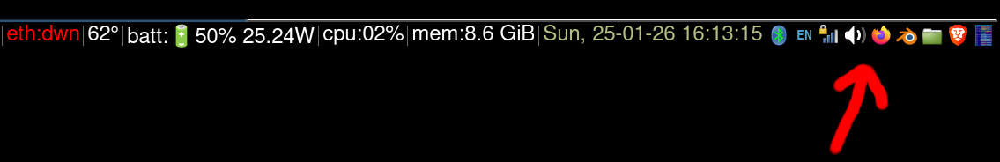

xe.py adds clickable buttons with PNG icons to your desktop system tray.
Here’s my i3 tray with xe.py doing its thing (look at the red arrow):

Standard desktop environments usually include this feature natively.
This was mostly designed for i3wm which does not.
However, xe.py has been tested and seems to work fine on the following desktop environments:
Generally speaking, if your system tray speaks the xembed protocol, I expect xe.py to work out of the box (caveat emptor: it won’t work on wayland).
Easiest way to check if it works for you:
When I write code, my - by far - prefered environments are tiling window managers.
Specifically, I use: i3wm
However, the original author of i3wm as well as its subsequent maintainers subscribe to a strict minimalist philosophy whereby everything is supposed to be done via the keyboard and displaying little pictures in the status bar generally seems to be considered bad taste 😃
I am in fact in general agreement with that philosophy, with one exception:
I code on a laptop with a touchpad, which means a button click is far less costly (in terms of speed and muscle use) than it is with a mouse.
for apps used super often (e.g. terminals via $mod+enter) keyboard shortcuts is indeed The Way.
for somewhat rarely used apps, launching them via dmenu or xlunch, or any of the plethora of similar utilities, using $mod+d is a perfectly fine choice.
there is however a very short list of apps that fall exactly in the cracks separating these two cases:
apps launched often enough that using $mod+d launching is a giant PITN (too slow)
but apps launched not often enough that the cognitive load of committing a keyoard shortcut to memory for each is simply not worth the exertion.
It looks like I am not the only one feeling this way, and there are a number of existing solutions to the problem that make some areas of the i3 status bar clickable and can launch stuff.
However: they all share one major shortcoming (my biased opinion): because the i3 status bar can only (by deliberate design choice of the i3 authors) display text, and all these solutions are very far from aesthetically pleasing. They are also much harder to spot quickly than icons.
Yes, there are workarounds e.g. using hacked fonts that display little drawings instead of letters. Again, my own opinion here, but … these are still not very nice, still hard to spot quickly because they’re B&W.
Actual pictures are:
So as a result, I’ve been wanting to scratch this specific itch probably for the better part of 10 years.
xe.py is the outcome, and, sure, not a perfect one (it’s hackish, probably violates a large number of UI design guidelines, can only insert buttons in the tray and nowhere else, etc…), but … itch scratched, I can finaly launch apps from nicely rendered clickable buttons in the i3 status bar.
sudo apt install gir1.2-appindicator3-0.1
git clone https://github.com/emogenet/xe.git
cd xe
pip3 install -f requirements.txt
/usr/bin/python3 ./xe.py